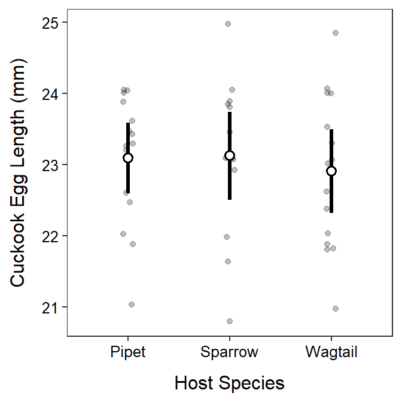

| Source | df | SS | MS | F | p-value |
|---|---|---|---|---|---|
| Among | 3 | 17.25 | 5.75 | 1.26 | 0.315 |
| Within | 20 | 91.20 | 4.56 | - | - |
| Total | 23 | 108.45 | - | - | - |
distrib(1.26,distrib="f",df1=3,df2=20,lower.tail=FALSE).
| Source | df | SS | MS | F | p-value |
|---|---|---|---|---|---|
| Among | 5 | 887.05 | 177.41 | 5.25 | 0.001 |
| Within | 48 | 1621.44 | 33.78 | - | - |
| Total | 53 | 2508.49 | 47.33 | - | - |
distrib(5.25,distrib="f",df1=5,df2=48,lower.tail=FALSE).
anova() but it is the total number of cuckoo eggs (n=44) minus 1.anova(), however it is the variability in cuckoo egg length around the grand mean or the variability unexplained by using only one mean (simple model) to represent all three groups.> cuc <- read.csv("Cuckoos.csv")lm1 <- lm(length~species,data=cuc)
anova(lm1)Analysis of Variance Table
Response: length
Df Sum Sq Mean Sq F value Pr(>F)
species 2 0.410 0.20496 0.1992 0.8202
Residuals 41 42.182 1.02883 ggplot(data=cuc,mapping=aes(x=species,y=length)) +
geom_jitter(alpha=0.25,width=0.05) +
stat_summary(fun.data=mean_cl_normal,geom="pointrange",
size=1.1,fatten=2,pch=21,fill="white") +
labs(y="Cuckook Egg Length (mm)",x="Host Species") +
theme_NCStats()